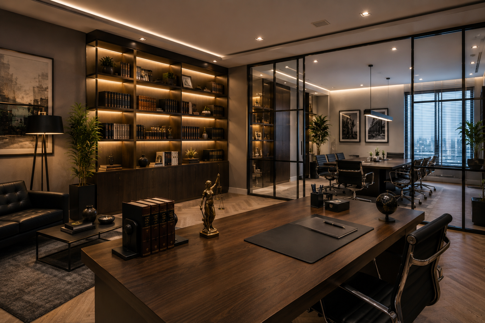

Sua empresa cresceu.
Mas cada setor
ainda opera como
uma ilha.
O Problema
Sua empresa não tem problema de equipe.
Tem problema de coordenação.
Você já sentiu isso. O time é bom. As ferramentas funcionam. Mas marketing roda campanha sem vendas saber. Finanças aprova orçamento sem operação ter input. Atendimento promete coisa que produção não consegue entregar.
sistemas desconectados 286h
em tarefas manuais 51%
sem dado atualizado 67%
após 15 minutos 80%
Esse é o limite oculto do seu crescimento. Não é o produto. Não é o mercado. É a operação que ficou maior que a inteligência dela.
A Solução
A Catalise.me instala o sistema nervoso
que estava faltando.
Não trocamos seus sistemas. Não substituímos sua equipe. Construímos uma camada agêntica sobre o que você já tem: onde os setores compartilham dados, aprendem juntos, e se otimizam sozinhos.
A gente chama essa camada de Opera OS. É a infraestrutura de inteligência operacional que faltava na sua empresa.
como a camada agêntica conecta sua empresa
O Método
Cinco fases. 10 a 12 semanas.
Resultado certo.
Cada implementação segue o OPERA nossa metodologia proprietária de 5 fases.
Organização
Diagnóstico profundo da operação atual. Mapeamos cada processo: do primeiro contato do cliente até o pós-venda. Identificamos e classificamos todos os gargalos por impacto financeiro real.
Planejamento
Desenhamos a arquitetura ideal. Cada sistema é escolhido e conectado não por intuição, mas por necessidade operacional. A planta baixa da sua nova inteligência neural.
Estratégia
O alinhamento do time. Não adiantam sistemas que a equipe não usa. Desenhamos a gestão de mudança, as regras de ouro e como a cultura vai absorver a nova velocidade.
Realização
Mão na massa bruta. Integração de APIs, automação de fluxos Zappier/Make, configuração de CRMs e painéis BI. O sistema nervoso central ganha vida e começa a pulsar os primeiros dados reais.
Afinação
Onde a excelência acontece. Coleta de feedbacks da equipe operando, micro-ajustes nos gatilhos, relatórios aprimorados e treinamento contínuo. Entregamos a chave, calibrada para a sua pista.
Aplicações
Onde o Opera OS transforma operações.
Cada setor tem suas dores específicas de coordenação. O Opera OS se adapta ao seu contexto e entrega resultado mensurável.

Hotelaria & Turismo
Check-in inteligente e gestão de demanda
Reservas, governança, manutenção e atendimento ao hóspede coordenados por IA — sem silos entre os departamentos.
↑ 40% na taxa de ocupação efetiva
Clínicas de Saúde
Agendamento preditivo automatizado
Agenda, confirmações, pós-consulta e faturamento operando como um sistema único que aprende com cada paciente.
↓ 70% nas faltas sem avisoImobiliárias
Pipeline de leads e follow-up 24/7
Do lead ao contrato: captação, qualificação, nutrição e proposta integrados em um fluxo único e autônomo.
↑ 3× na taxa de conversãoEnsino Superior
Retenção acadêmica com IA preditiva
Matrícula, frequência, desempenho, renovação de contrato e risco de evasão monitorados por agentes que agem antes do problema virar perda.
↓ 50% na evasão no 1º semestre
Escritórios Jurídicos
Gestão de processos com prazos inteligentes
Prazos processuais, documentação, cobrança e comunicação com clientes unificados em um único sistema nervoso.
↓ 85% no risco de prazo perdidoEducação Básica
Engajamento de pais e alunos
Comunicação automatizada, frequência, desempenho e risco de evasão monitorados por IA que age proativamente.
↓ 45% na taxa de evasãoO Que Muda
O que acontece quando a operação fica catalisada.
A maioria dos nossos clientes recupera o investimento em 60 a 90 dias: em conversão, em horas liberadas, em decisões que antes ficavam paradas.
- Dono no WhatsApp 14 horas por dia
- Lead à noite morre, concorrente responde antes
- Cada setor com sua planilha, ninguém sabe o todo
- Review fica 5 dias sem resposta
- Decisão de pricing sai de feeling
- Não sabe qual canal traz mais ROI
- Agentes de IA operam 24/7, dono volta a ter noite
- Lead à meia-noite recebe resposta em 15 segundos
- Setores compartilham inteligência em tempo real
- Review respondida em até 1 hora, automaticamente
- Pricing dinâmico ajustado por demanda
- Dashboard mostra ROI por canal, em tempo real
Para Quem
Quem está pronto para essa solução
- Seu negócio fatura R$ 100.000 ou mais por mês e tem operação consolidada
- Você é dono, gestor ou diretor de uma empresa de serviços (hotelaria, clínica, autoescola, imobiliária, jurídico, educação)
- Sua operação cresceu até onde dava pelo esforço da equipe, agora precisa de sistema
- Você está disposto a investir em transformação real, não em mais uma ferramenta solta
- Você consegue esperar 10 a 12 semanas para ver o sistema completo rodando
- Ainda está validando modelo de negócio
- Precisa de resultado em 2 semanas
- Quer comprar só software sem transformação de processo
Tudo bem, somos honestos sobre quando não somos a melhor opção.
Próximo passo
Sua empresa já tem corpo.
Vamos instalar o sistema nervoso.
O diagnóstico inicial é gratuito para perfis qualificados. Em 45 min, mapeamos sua operação, identificamos os gargalos por impacto financeiro e apresentamos o plano OPERA personalizado. Sem compromisso. Sem letra miúda.